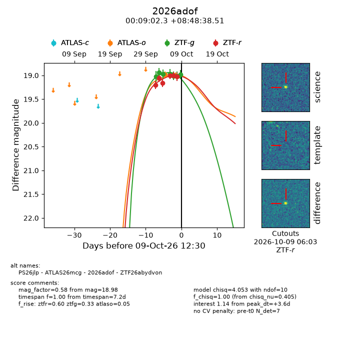
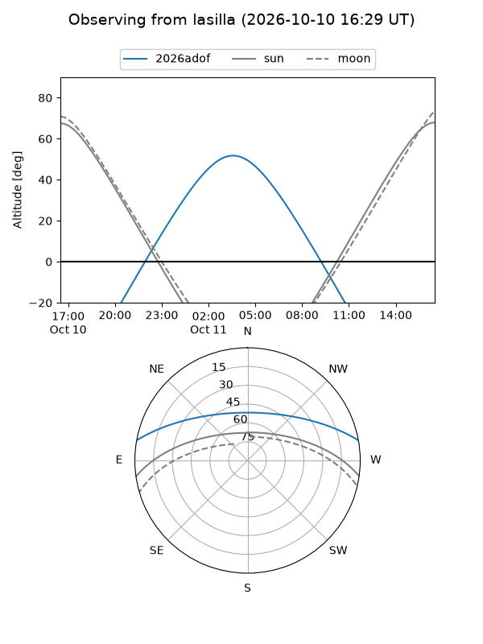
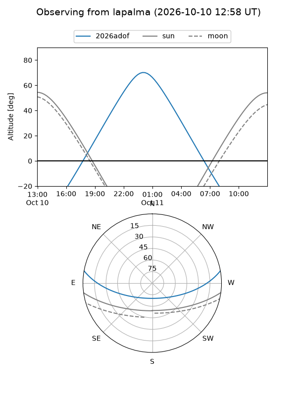
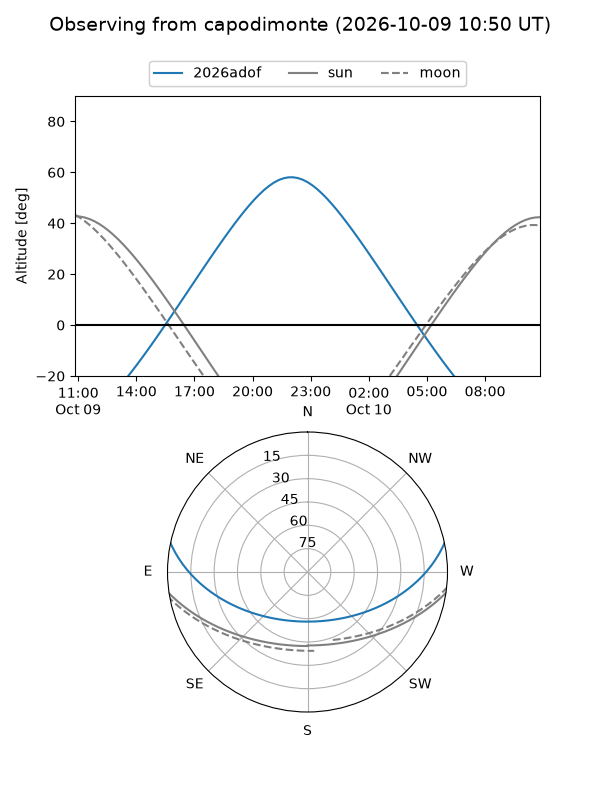
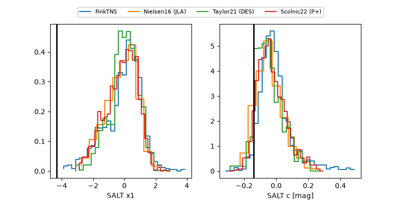

2026adof
Target 2026adof at 2026-10-09 12:32
Aliases and brokers:
FINK-ZTF: ztf.fink-portal.org/ZTF26abydvon
Lasair-ZTF: lasair-ztf.lsst.ac.uk/objects/ZTF26abydvon
ALeRCE-ZTF: alerce.online/object/ZTF26abydvon
YSE-PZ: ziggy.ucolick.org/yse/transient_detail/2026adof
TNS name: wis-tns.org/object/2026adof
Direct TNS query: direct search
alt names
ZTF26abydvon (ztf,fink_ztf)
2026adof (tns,yse)
ATLAS26mcg (atlas)
PS26jlp (panstarrs)
Coordinates:
equatorial (ra, dec) = 2.2596,+8.81070
equatorial (HMS+DMS) = 00:09:02.31,+08:48:38.51
galactic (l, b) = (105.5088,-52.62081)
Flags:
peak dt: +3.6
Photometry:
last atlaso=19.01, ztfg=18.98, ztfr=19.03
2 atlaso, 7 ztfg, 6 ztfr detections
Lightcurve

Visibility



Additional plots
